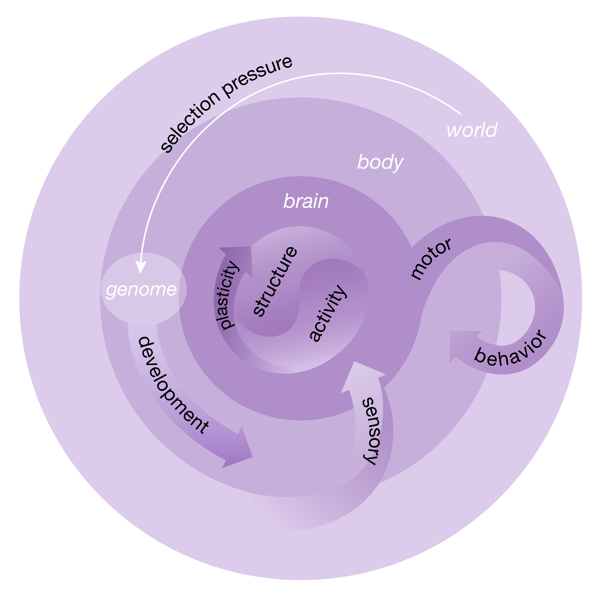

class: left, name:opening # Connectome Coding Joshua T. Vogelstein <br><br><br> <img src="images/funding/jhu_bme_blue.png" STYLE="HEIGHT:95px;"/> <img src="images/funding/KNDI.png" STYLE="HEIGHT:95px;"/> .foot[[jovo@jhu.edu](mailto:jovo at jhu dot edu) | <http://neurodata.io/talks/SFN18.html> | [@neuro_data](https://twitter.com/neuro_data) ] --- ## Outline - Background - Example Connectomes - What is a Connectome Code - Statistical Models of Connectomes - Discussion --- ## .k[Background] --- ## History - Sporns et al. *PLoS CB* (2005) - Hagmann (2005) - PubMed search 11/2/18: .r[3267] hits. "To understand the functioning of a network, one must know its elements and their interconnections....We propose to call this dataset the human 'connectome'." --- ## What is a Connectome? - A .r[network] of a brain, at a spatiotemporal precision & extent - .r[Nodes] are distinct biophysical entities with 3D morphological boundaries - .r[Edges] are either: 1. .r[Structural]: physical morphological objects, or 2. .r[Functional]: characterizations the statistical and/or causal relationship between the activity of a pair of nodes -- - A brain could have many .r[different] connectomes, at different times and/or resolutions - We measure properties of the brain to .r[estimate] connectomes - Estimates are always .r[noisy] --- ## What are Nodes? - Can be defined by anatomy, activity, or connectivity - Has a label (e.g., V1), often one can map from a label in one connectome to that of another - Examples: neuron, gyral region, random contiguous set of voxels --- ## What are Edges? - Can be defined by activity or connectivity - Structural examples: synapse, fiber bundle between ROIs - Functional example, Pearson's correlation --- ## Some caveats - connectomes are not comprehensive, unlike genomes - nodes can be abstractions, eg, all neurons type A - attributes can be arbitrary, eg, distribution of synaptic vesicles - connectomics is the study of neural circuitry - canonical examples include: - somatic ganglion circuit of a crab - sound localization circuit of barn owl --- ## .k[Example Connectomes] --- ## C Elegans <img src="images/elegans_connectome.png" style="height: 450px;"/> - weighted, directed, multi --- ## Drosophila Mushroom Body <img src="images/drosophilaMB_connectome.png" style="height: 450px;"/> - binary, directed --- ## Mouse Ex Vivo Diffusion MRI <img src="images/mousedMRI_connectome.png" style="height: 450px;"/> - weighted, undirected --- ## Human MRI <img src="images/human_connectome.png" style="height: 450px;"/> - weighted, undirected, multi (dense) --- ## What is a Code? A code is a system of (potentially stochastic) rules that translate from one representation of information into another. .pull-left[ Examples: - Morse: one-to-one - genetic: deterministic - neural: stochastic ] .pull-right[ <img src="https://upload.wikimedia.org/wikipedia/commons/b/b5/International_Morse_Code.svg" style="height: 400px;"/> ] --- ## .k[What is a Connectome Code? ] --- ## Conceptual Model - Constituents - World - Body - Brain: - Structure - Activity - Spiral Loops - Brain (fast/small): structure $\Leftrightarrow$ activity (plasticity) - Body (medium): motor $\Leftrightarrow$ sensory (ego- & allo-centric) - World (slow/big): behavior $\Leftrightarrow$ genome $\Leftrightarrow$ body/brain --- class: center  *Image Credits: [Julia Kuhl](http://somedonkey.com/) and [Brett Mensh](http://optimizescience.com/)* --- ## Connectomes as Mechanisms The connectome is the mechanism by which the genome can encode its preferred behaviors, that, when combined with the body (and physics) yields the desired behaviors with sufficiently high probability to help the organism win the evolutionary game its niche imposes on it. --- ## Encoding and Decoding 1. Encoding: genomes $\Rightarrow$ dynamic connectomes 2. Decoding: connectomes $\Rightarrow$ behaviors --- ## A Statistical Formalization of Connectome Coding - Random variables: X, Y - Distributions: X ~ P, Y ~ P - Conditionals: P[X | Y], P[Y | X] Formally, codes are conditional distributions. --- ## Constituents - A: brain activity - B: body movement - C: connectome - D: development (genome) - E: environment (world) --- ## Abstract Connectome Codes - P[C | D]: prob of connectome, given a genome - P[B | C]: prob of body movement, given a connectome - P[A,B | C]: prob of activity and body, given a connectome - P[A B | C, D]: etc.... --- ## Causal Connectome Codes - Let $\_i$ denote a generation - $D\_i \Rightarrow C\_i \Leftrightarrow A\_i \Leftrightarrow B\_i \Leftrightarrow E\_i \Rightarrow D\_{i+1}$ Intertwined spiral loops. --- ## .k[Statistical Models of Connectomes] --- ## Independent Edge Models Erdos-Renyi (ER): akin to assuming a neuron's spike rate is Poisson with a fixed rate. - edges are binary - all edges independent - all edges sampled from identical distribution - $\Rightarrow$ only 1 parameter: prob of an edge Notes - directed vs. undirected - loopy vs. no loops - Simplest random graph model - lacks sufficient complexity/descriptive power for most questions --- ## Independent Edge Models .r[Weighted] Erdos-Renyi: akin to Poisson model using a bigger bin width. - edges can take .r[any value] - edges are independent - edges are sampled from identical distribution - $\Rightarrow$ can still only be 1 parameter: expected weight of an edge Notes - directed vs. undirected - loopy vs. no loops - simplest .r[weighted] random graph model - lacks sufficient complexity/descriptive power for most questions --- ## Independent Edge Models .r[Zero-Inflated] Weighted Erdos-Renyi: akin to assuming a bursty neuron, modeling both probability of burst and expected number of spikes in each burst - edges can take any value - edges are independent - edges are sampled from identical distribution - .r[2 parameters]: prob of edge, and expected weight of edge. Notes - directed vs. undirected - loopy vs. no loops - simplest sparse weighted random graph model - can provide useful/interesting description of a connectome --- ## IE Models of Connectomes <br> <img src="images/independent_edge_connectome_estimates.png" style="width: 800px;"/> --- ## Categorical Conditionally Independent Edge Models Stochastic Block Model (SBM): akin to assuming a neuron's are in different states, which determine Poisson rate. - edges are binary - edges are .r[conditionally] independent - each node has a class assignment - P[ A(i,j) ] = B(class i, class j) Notes - directed vs. undirected - loopy vs. no loops - simplest >2 parameter model --- ## Connectome SBMs <img src="images/fig_sbm.png" style="width: 800px;"/> --- ## Generalized SBMs Weighted Stochastic Block Model (SBM) - edges are .r[weighted] - edges are conditionally independent - each node has a class assignment - P[ A(i,j) ] = B(class i, class j) is expected weight of connection Notes - directed vs. undirected - loopy vs. no loops --- ## Generalized SBMs Zero-Inflated Weighted Stochastic Block Model (SBM) - edges are weighted - edges are conditionally independent - each node has a class assignment - P[ A(i,j) ] = is defined by a matrix of probabilities of connection, and a matrix of expected weights Notes - directed vs. undirected - loopy vs. no loops --- ## Continuous Conditionally Independent Edge Models Random Dot Product Graphs (RDPG): akin to latent state models in population coding - edges are binary - edges are conditionally independent - each node has a .r[latent position in d-dimensions] - P[ A(i,j) ] = f(latent position i, latent position j) - for example, P[ A(i,j) ] is the product of latent positions Notes - directed vs. undirected - no loops is ickier - generalizes previous models --- ## Connectome RDPGs <img src="images/fig_ase.png" style="width: 750px;"/> --- ## Generalized RDPG - Weighted RDPG: edges have weights - Zero-Inflated Weighted RDPG: edges have probabilities and expected weights --- ## Latent Structure Models - Special case of RDPG, where latent positions are organized into .r[structures] - Examples - each node class has a distribution of latent positions, eg, Gaussian - latent positions are hierarchical, eg, multiscale atlas - repeated motif, eg, cortical columns - latent positions are curved --- ## Drosophila Mushroom Bodies <img src="images/Fig15-new.png" style="width: 750px;"/> --- ## Population Graph Models - Mixture of RDPG - Joint Heterogeneous RDPG <!-- <img src="images/rerf_perf.png" style="width: 800px;"/> --> <!-- <img src="images/Fig4_benchmark_ranks.png" style="height: 600px;"/> --> --- ## .k[Discussion] --- ## Summary and Next Steps - Connectomes are the missing mechanistic link: .center[.r[genomes $\Leftrightarrow$ neural activity and behaviors]] - Extend ideas from coding theory to support these analyses - Connectomes, genetic and behavior data are available --- ### References Papers - Craddock et al. *Nature Methods* (2013) [1](http://dx.doi.org/10.1038/nmeth.2482) - Athreya et al. *Journal of Machine Learning Research* (2018) [2](http://www.jmlr.org/papers/v18/17-448.html) - Athreya et al. *arXiv* (2018) [3](https://arxiv.org/abs/1806.01401) Code - R graphstats: https://github.com/neurodata/graphstats - Python graspy: https://github.com/neurodata/graspy Data - NeuroData: [https://neurodata.io](https://neurodata.io/) --- class: top, left ### Acknowledgements <div class="container"> <img src="faces/cep.png"/> <div class="centered">Carey Priebe</div> </div> <div class="container"> <img src="faces/randal.jpg"/> <div class="centered">Randal Burns</div> </div> <div class="container"> <img src="faces/minh.jpg"/> <div class="centered">Minh Tang</div> </div> <div class="container"> <img src="faces/avanti.jpg"/> <div class="centered">Avanti Athreya</div> </div> <div class="container"> <img src="faces/vince.jpg"/> <div class="centered">Vince Lyzinski</div> </div> <div class="container"> <img src="faces/dpmcsuss.jpg"/> <div class="centered">Daniel Sussman</div> </div> <div class="container"> <div class="centered">Percy Li</div> </div> <div class="container"> <img src="faces/youngser.jpg"/> <div class="centered">Youngser Park</div> </div> <div class="container"> <img src="faces/gkiar.jpg"/> <div class="centered">Greg Kiar</div> </div> <div class="container"> <img src="faces/ebridge.jpg"/> <div class="centered">Eric Bridgeford</div> </div> <div class="container"> <img src="faces/bcaffo.jpg"/> <div class="centered">Brian Caffo</div> </div> <div class="container"> <img src="faces/milham.jpg"/> <div class="centered">Michael Milham</div> </div> <span style="font-size:200%; color:red;">♥, 🦁, 👪, 🌎, 🌌</span> <img src="images/funding/nsf_fpo.png" STYLE="HEIGHT:95px;"/> <img src="images/funding/nih_fpo.png" STYLE="HEIGHT:95px;"/> <img src="images/funding/darpa_fpo.png" STYLE=" HEIGHT:95px;"/> <img src="images/funding/iarpa_fpo.jpg" STYLE="HEIGHT:95px;"/> <img src="images/funding/KAVLI.jpg" STYLE="HEIGHT:95px;"/> <img src="images/funding/schmidt.jpg" STYLE="HEIGHT:95px;"/> .foot[[jovo@jhu.edu](mailto:jovo at jhu dot edu) | <http://neurodata.io/talks/SFN18.html> | [@neuro_data](https://twitter.com/neuro_data) ] --- class: center questions?